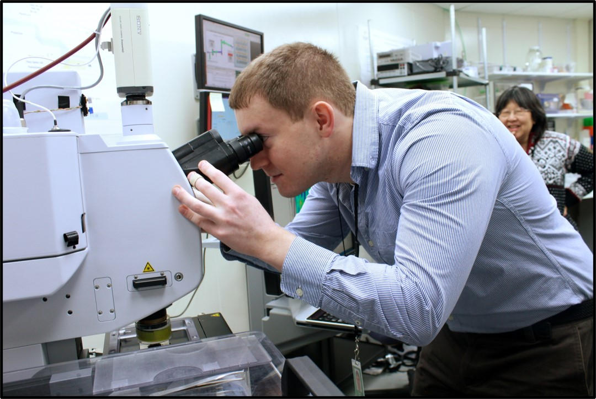

Members of the Willick Lab care about our well-being, embrace diversity in all its forms and respect that we all have lives outside of work.
We aim to conduct quality work that adds value to our field and conduct research with the highest ethical standards. As individuals, we recognize the importance of asking for help and are prepared to admit mistakes when they occur. This is an important part of research and learning.
Our goal is to encourage curiosity and camaraderie. We encourage conversation and debate, are generous with our expertise and express gratitude when others share their time with us.
 My research combines manipulative experiments to understand how plants tolerate or avoid injury in current and future environments. Much of my work focuses on physiological and biochemical mechanisms underpinning plant responses to low temperatures, but my long-term goal is to understand in cool climates the interplay between warming and water stress on plant physiology.
Furthermore, I am interested in how far and for how long you can stress a plant before the stress is lethal. Under these conditions, what is the critical physiological mechanism underlying mortality and what promotes recovery at sub-lethal stresses? These questions provide crucial information on thresholds that must be avoided and provide meaningful traits to target for crop improvement.